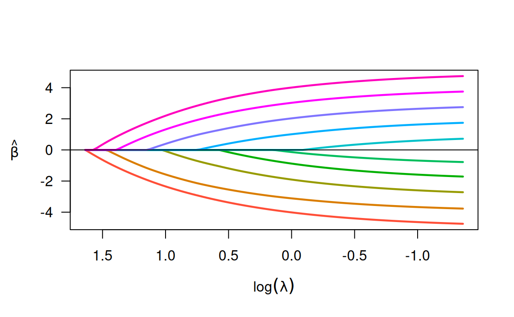
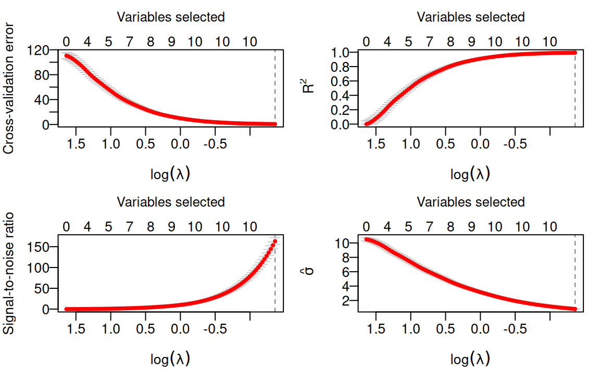

Small Data
Linear regression
library(biglasso)
#> Loading required package: bigmemory
#> Loading required package: Matrix
#> Loading required package: ncvreg
data(colon)
X <- colon$X
y <- colon$y
dim(X)
#> [1] 62 2000
X[1:5, 1:5]
#> Hsa.3004 Hsa.13491 Hsa.13491.1 Hsa.37254 Hsa.541
#> t 8589.42 5468.24 4263.41 4064.94 1997.89
#> n 9164.25 6719.53 4883.45 3718.16 2015.22
#> t 3825.71 6970.36 5369.97 4705.65 1166.55
#> n 6246.45 7823.53 5955.84 3975.56 2002.61
#> t 3230.33 3694.45 3400.74 3463.59 2181.42
## convert X to a big.matrix object
## X.bm is a pointer to the data matrix
X.bm <- as.big.matrix(X)
str(X.bm)
#> Formal class 'big.matrix' [package "bigmemory"] with 1 slot
#> ..@ address:<externalptr>
dim(X.bm)
#> [1] 62 2000
X.bm[1:5, 1:5]
#> Hsa.3004 Hsa.13491 Hsa.13491.1 Hsa.37254 Hsa.541
#> t 8589.42 5468.24 4263.41 4064.94 1997.89
#> n 9164.25 6719.53 4883.45 3718.16 2015.22
#> t 3825.71 6970.36 5369.97 4705.65 1166.55
#> n 6246.45 7823.53 5955.84 3975.56 2002.61
#> t 3230.33 3694.45 3400.74 3463.59 2181.42
## same results as X[1:5, 1:5]Cross-Validation
## 10-fold cross-valiation in parallel
cvfit <- tryCatch(
{
cv.biglasso(X.bm, y, seed = 1234, nfolds = 10, ncores = 4)
},
error = function(cond) {
cv.biglasso(X.bm, y, seed = 1234, nfolds = 10, ncores = 2)
}
)After cross-validation, a few things we can do:
- plot the cross-validation plots:
- Summarize CV object:
summary(cvfit)
#> lasso-penalized linear regression with n=62, p=2000
#> At minimum cross-validation error (lambda=0.0386):
#> -------------------------------------------------
#> Nonzero coefficients: 27
#> Cross-validation error (deviance): 0.14
#> R-squared: 0.40
#> Signal-to-noise ratio: 0.66
#> Scale estimate (sigma): 0.371- Extract non-zero coefficients at the optimal value:
coef(cvfit)[which(coef(cvfit) != 0),]
#> (Intercept) Hsa.8147 Hsa.43279 Hsa.36689 Hsa.3152
#> 6.882526e-01 -5.704059e-07 -2.748858e-08 -6.967419e-04 4.940698e-05
#> Hsa.36665 Hsa.692.2 Hsa.1272 Hsa.166 Hsa.31801
#> 1.297733e-05 -1.878545e-04 -1.808689e-04 3.717512e-04 1.119437e-04
#> Hsa.3648 Hsa.1047 Hsa.13628 Hsa.3016 Hsa.5392
#> 1.508691e-04 6.557284e-07 6.519466e-05 2.479566e-05 5.741251e-04
#> Hsa.1832 Hsa.1464 Hsa.12241 Hsa.44244 Hsa.9246
#> -4.052627e-05 1.821951e-05 -1.912212e-04 -3.369856e-04 -1.582765e-06
#> Hsa.41159 Hsa.33268 Hsa.6814 Hsa.1660 Hsa.404
#> 3.974870e-04 -4.911208e-04 5.639023e-04 5.171245e-04 -5.208537e-05
#> Hsa.43331 Hsa.1491 Hsa.41098.1
#> -6.853944e-04 2.977285e-04 -1.748628e-04Logistic Regression
data(Heart)
X <- Heart$X
y <- Heart$y
X.bm <- as.big.matrix(X)
fit <- biglasso(X.bm, y, family = "binomial")
plot(fit)Cox Regression
library(survival)
#>
#> Attaching package: 'survival'
#> The following object is masked _by_ '.GlobalEnv':
#>
#> colon
X <- heart[,4:7]
y <- Surv(heart$stop - heart$start, heart$event)
X.bm <- as.big.matrix(X)
#> Warning in as.big.matrix(X): Coercing data.frame to matrix via factor level
#> numberings.
fit <- biglasso(X.bm, y, family = "cox")
plot(fit)
Big Data
When the raw data file is very large, it’s better to convert the raw
data file into a file-backed big.matrix by using a file
cache. We can call function setupX, which reads the raw
data file and creates a backing file (.bin) and a descriptor file
(.desc) for the raw data matrix:
## The data has 200 observations, 600 features, and 10 non-zero coefficients.
## This is not actually very big, but vignettes in R are supposed to render
## quickly. Much larger data can be handled in the same way.
if(!file.exists('BigX.bin')) {
X <- matrix(rnorm(1000 * 5000), 1000, 5000)
beta <- c(-5:5)
y <- as.numeric(X[,1:11] %*% beta)
write.csv(X, "BigX.csv", row.names = F)
write.csv(y, "y.csv", row.names = F)
## Pretend that the data in "BigX.csv" is too large to fit into memory
X.bm <- setupX("BigX.csv", header = T)
}
#> Reading data from file, and creating file-backed big.matrix...
#> This should take a while if the data is very large...
#> Start time: 2025-03-05 17:44:34
#> End time: 2025-03-05 17:44:36
#> DONE!
#>
#> Note: This function needs to be called only one time to create two backing
#> files (.bin, .desc) in current dir. Once done, the data can be
#> 'loaded' using function 'attach.big.matrix'. See details in doc.It’s important to note that the above operation is just one-time execution. Once done, the data can always be retrieved seamlessly by attaching its descriptor file (.desc) in any new R session:
rm(list = c("X", "X.bm", "y")) # Pretend starting a new session
X.bm <- attach.big.matrix("BigX.desc")
y <- read.csv("y.csv")[,1]This is very appealing for big data analysis in that we don’t need to “read” the raw data again in a R session, which would be very time-consuming. The code below again fits a lasso-penalized linear model, and runs 10-fold cross-validation:
system.time({fit <- biglasso(X.bm, y)})
#> user system elapsed
#> 0.269 0.001 0.271
plot(fit)
# 10-fold cross validation in parallel
tryCatch(
{
system.time({cvfit <- cv.biglasso(X.bm, y, seed = 1234, ncores = 4, nfolds = 10)})
},
error = function(cond) {
system.time({cvfit <- cv.biglasso(X.bm, y, seed = 1234, ncores = 2, nfolds = 10)})
}
)
#> user system elapsed
#> 0.411 0.005 2.922